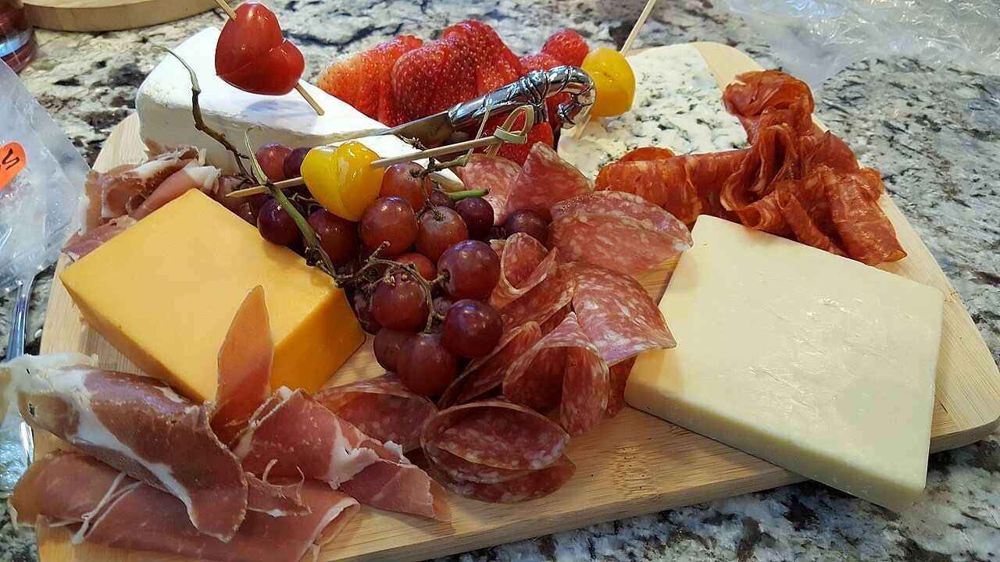

Fotografias ilustrativas — no site final usamos as vossas.
Para petiscar com amigos e esticar a conversa.
4,6★ em 148 avaliações no Google.
Ligue ou escreva por WhatsApp.
O Tas'co Pio é uma taberna na Rua das 3 Bicas, no centro de Guimarães. Venha beber um copo e petiscar com amigos, ao ritmo da conversa.

Fotografias ilustrativas — no site final usamos as vossas.
Pedido de reserva
Escolha o dia e a hora — o pedido chega por WhatsApp e confirmamos logo.
↑ Assim chegaria a mensagem ao vosso WhatsApp. (Nesta demonstração nada é enviado.)
Onde estamos
Proposta para Tas'co Pio
Esta página foi feita de propósito para Tas'co Pio por João Machado, programador web aqui de Guimarães. Inclui:
Eu trato do alojamento e da manutenção. Sem compromisso.